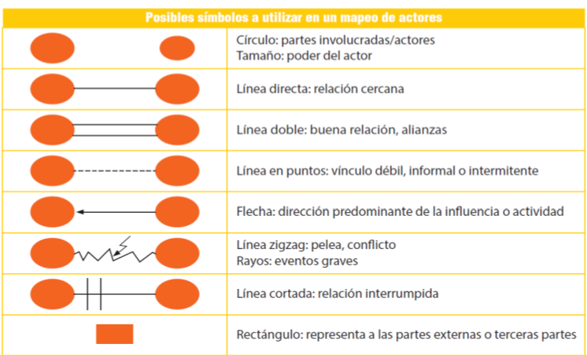
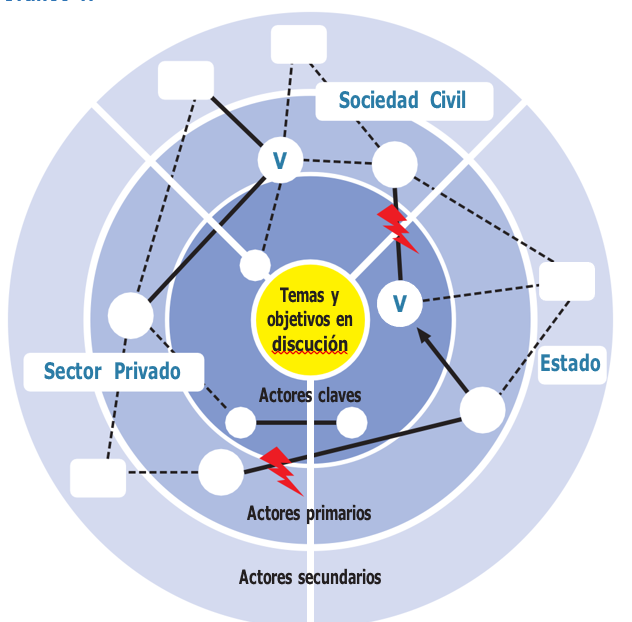
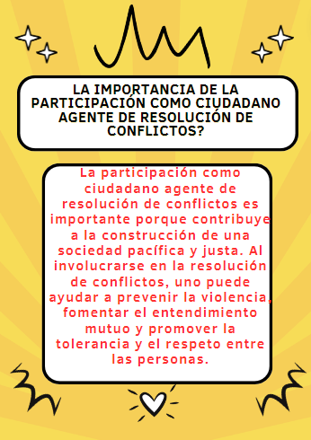
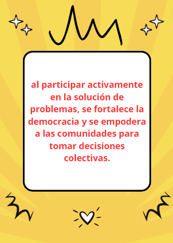
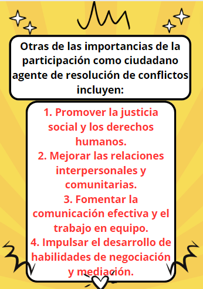
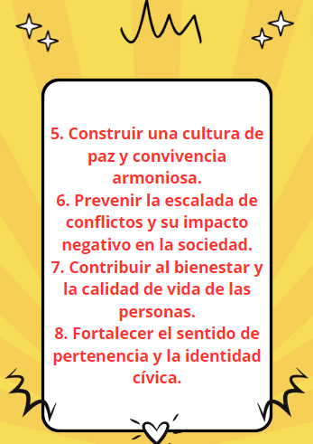

Los componentes de un conflicto son: las partes involucradas, los intereses en conflicto, las emociones y actitudes, la comunicación y la dinámica de poder. Los tipos de conflictos pueden ser interpersonales, intrapersonales, intergrupales o intragrupo.
La no violencia se define como un enfoque o filosofía que busca resolver los conflictos y promover el cambio social sin recurrir a la violencia física o psicológica. Se basa en principios como el respeto, la empatía, la negociación y la resistencia pacífica.
Los principales impedimentos para solucionar un conflicto es la no comprensión del porqué se genero el conflicto, cual fue su causa y consecuencia. El análisis se realiza con el objetivo de prevenir el conflicto, evitando que se escale a la violencia, el cual requiere dedicar tiempo a realizar análisis completos de la situación que se interviene, teniendo en cuenta que los conflictos son dinámicos y que es necesario revisar y actualizar los análisis elaborados, logrando adaptar las intervenciones para garantizar una resolución de conflicto adecuada y sostenible en el tiempo.
El omitir un análisis de conflicto lo lleva a generar soluciones rápidas, que se convierten en soluciones parciales que no abordan la raíz del conflicto, también lo puede llevar a que se vuelva un conflicto violento, empeorando la relación, dificultando una posible solución positiva del conflicto. Inicialmente, deben consultar el módulo 1 del Manual formativo en prevención y resolución de los conflictos, resalten las reflexiones más importantes. Continúan con la elaboración del blog, identifican y describen un conflicto, seguidamente destaquen sus características y dimensiones de solución y tengan en cuenta:
Las extorsiones en Barranquilla
En Barranquilla, hasta agosto de 2022, en comparación con las demás ciudades principales. La tasa de extorsión ha tenido una tendencia al alza en los últimos años, especialmente de 2021-2022, al pasar de 5 casos por cien mil habitantes a ubicarse en 12 casos por cien mil habitantes en 2022.
Definición del Conflicto, La extorsión es un delito que consiste en obligar a través de violencia y amenazas a una persona para realizar, tolerar u omitir un acto en contra de su voluntad, con la intención de generar provecho ilícito o beneficio económico para sí o para un tercero.
Actores que intervienen en el conflicto: Boicoteadores, Crimen Organizado, buscando beneficios económicos.
Victima de extorsión, Persona presionada violentamente para entregar sus bienes o recursos.
Esta parte del blog, puede encontrarla dandole click al siguiente enlace
Click aqui para ver la parte 3  Si un conflicto no se resuelve adecuadamente, podría empeorar con el tiempo, causar tensiones y resentimientos, afectar las relaciones personales y laborales, y generar consecuencias negativas a largo plazo.
Algunos hábitos que pueden ayudar a mejorar nuestras relaciones interpersonales son: practicar la empatía, escuchar activamente, comunicarse de manera clara y respetuosa, mostrar interés genuino en los demás y ser comprensivos.
Ser ciudadano significa ser miembro de una comunidad política y tener derechos y responsabilidades en relación con esa comunidad, como el derecho a votar, participar en el gobierno y cumplir con las leyes.
Ser ciudadano agente de resolución de conflictos implica tener la capacidad y disposición para abordar y resolver problemas o desacuerdos de manera pacífica y constructiva, promoviendo el diálogo, la empatía y la búsqueda de soluciones justas y equitativas para todas las partes involucradas.
   